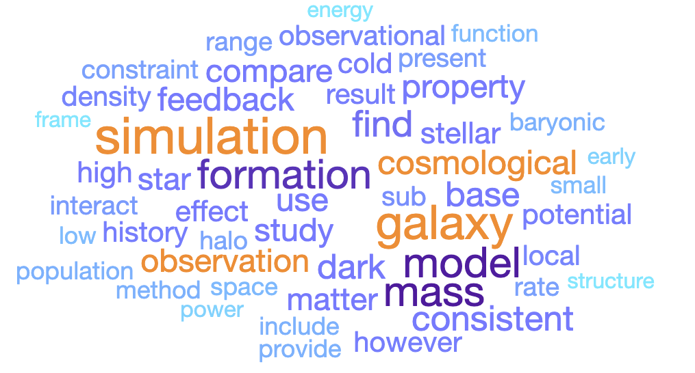

For the full publication list, please check my ADS bibliography link.
Selected Publications (as the leading author)
- The bolometric quasar luminosity function at z = 0-7 (2020) ; Shen, Xuejian; Hopkins, Philip F.; Faucher-Giguère, Claude-André; Alexander, D. M. et al., Monthly Notices of the Royal Astronomical Society, Volume 495, Issue 3, pp.3252-3275
- Dissipative dark matter on FIRE - I. Structural and kinematic properties of dwarf galaxies (2021) ; Shen, Xuejian; Hopkins, Philip F.; Necib, Lina; Jiang, Fangzhou et al., Monthly Notices of the Royal Astronomical Society, Volume 506, Issue 3, pp.4421-4445
- Dissipative Dark Matter on FIRE - II. Observational signatures and constraints from local dwarf galaxies (2024) ; Shen, Xuejian; Hopkins, Philip F.; Necib, Lina; Jiang, Fangzhou et al., The Astrophysical Journal, Volume 966, Issue 1, id.131, 24 pp.
- SMBH seeds from dissipative dark matter (2021) ; Xiao, Huangyu; Shen, Xuejian; Hopkins, Philip F.; Zurek, Kathryn M., Journal of Cosmology and Astroparticle Physics, Volume 2021, Issue 07, id.039, 43 pp.
- High-redshift JWST predictions from IllustrisTNG: dust modelling and galaxy luminosity functions (2020) ; Vogelsberger, Mark; Nelson, Dylan; Pillepich, Annalisa; Shen, Xuejian et al., Monthly Notices of the Royal Astronomical Society, Volume 492, Issue 4, p.5167-5201
- High-redshift JWST predictions from IllustrisTNG: II. Galaxy line and continuum spectral indices and dust attenuation curves (2020) ; Shen, Xuejian; Vogelsberger, Mark; Nelson, Dylan; Pillepich, Annalisa et al., Monthly Notices of the Royal Astronomical Society, Volume 495, Issue 4, pp.4747-4768
- High-redshift predictions from IllustrisTNG - III. Infrared luminosity functions, obscured star formation, and dust temperature of high-redshift galaxies (2022) ; Shen, Xuejian; Vogelsberger, Mark; Nelson, Dylan; Tacchella, Sandro et al., Monthly Notices of the Royal Astronomical Society, Volume 510, Issue 4, pp.5560-5578
- X-ray morphology of cluster-mass haloes in self-interacting dark matter (2022) ; Shen, Xuejian; Brinckmann, Thejs; Rapetti, David; Vogelsberger, Mark et al., Monthly Notices of the Royal Astronomical Society, Volume 516, Issue 1, pp.1302-1319
- Disruption of Dark Matter Minihaloes in the Milky Way environment: Implications for Axion Miniclusters and Early Matter Domination (2024) ; Shen, Xuejian; Xiao, Huangyu; Hopkins, Philip F.; Zurek, Kathryn M., The Astrophysical Journal, Volume 962, Issue 1, id.9, 25 pp.
- THESAN-HR: Galaxies in the Epoch of Reionization in warm dark matter, fuzzy dark matter and interacting dark matter (2024) ; Shen, Xuejian ; Borrow, Josh ; Vogelsberger, Mark ; Garaldi, Enrico et al., Monthly Notices of the Royal Astronomical Society, Volume 527, Issue 2, pp.2835-2857
- The impact of UV variability on the abundance of bright galaxies at z>9 (2023) ; Shen, Xuejian ; Vogelsberger, Mark ; Boylan-Kolchin, Michael ; Tacchella, Sandro ; Kannan, Rahul, Monthly Notices of the Royal Astronomical Society, Volume 525, Issue 3, pp.3254-3261
- The THESAN project: galaxy sizes during the epoch of reionization (2024) ; Shen, Xuejian ; Vogelsberger, Mark ; Borrow, Josh ; Hu, Yongao et al., Monthly Notices of the Royal Astronomical Society, Volume 534, Issue 2, pp.1433-1458
- Early galaxies and early dark energy: a unified solution to the hubble tension and puzzles of massive bright galaxies revealed by JWST (2024) ; Shen, Xuejian ; Vogelsberger, Mark ; Boylan-Kolchin, Michael ; Tacchella, Sandro ; Naidu, Rohan P., Monthly Notices of the Royal Astronomical Society, Volume 533, Issue 4, pp.3923-3936
- The THESAN-ZOOM project: Star-formation efficiencies in high-redshift galaxies (2025) ; Shen, Xuejian ; Kannan, Rahul ; Puchwein, Ewald ; Smith, Aaron et al., eprint arXiv:2503.01949
- The Cosmic Rush Hour: Rapid Formation of Bright, Massive, Disky, Star-Forming Galaxies as Signatures of Early-Universe Physics (2025) ; Shen, Xuejian ; Zier, Oliver ; Vogelsberger, Mark ; Boylan-Kolchin, Michael et al., eprint arxiv:2509.19427